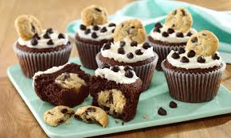

Friends
- 390 buddies
- Big Will
- Conon the Librarian
04/09/08: Spatulas
Yesterday,I went to the store and got some much
needed spatulas!(What better way to say I love myself than than to buy myself a spactula

04/09/08: Cookie Cupcakes
My favourite cartoon character is cookie and my
favourite dessert is cupcake.So Cookie Cupcakes are
best of both the Worlds .Did you know ? Cookie character once said,
"Sometimes me think what is love, and then me think what is love,and then me think love is what cookies for. Me give up the last cookie for you."
I wonder if the same applies for the cup cakes?(if so,i don't think I can never ever love Anyone!)
